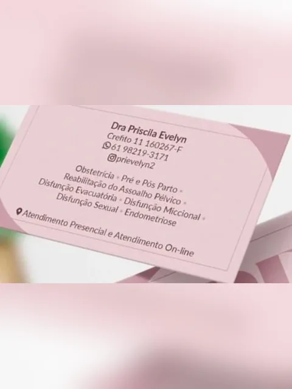

Atendimento de fisioterapia pélvica com a Dra. Priscila Evelyn, na QR 320, em Samambaia Sul. Fale pelo WhatsApp para tirar dúvidas e agendar a sua avaliação.
A fisioterapeuta e as áreas de atendimento, com consultas presenciais e on-line.

Toque em um card para falar pelo WhatsApp com a mensagem já pronta.
Avaliação e acompanhamento em fisioterapia pélvica. Tire suas dúvidas pelo WhatsApp.
Falar no WhatsApp →Converse antes de agendar para entender como funciona o atendimento.
Falar no WhatsApp →Pergunte sobre valores, horários livres e tudo o que você precisar saber antes de agendar.
Abrir WhatsApp →A Dra. Priscila Evelyn atende fisioterapia pélvica na QR 320, Conjunto 12, em Samambaia Sul. No Google, o perfil tem nota 5,0, com 10 avaliações.
Nota e número de avaliações conforme o perfil público de Fisioterapia Pélvica Dra. Priscila Evelyn no Google Maps.
Ver avaliações no GoogleAgende o seu horário com Dra. Priscila Evelyn pelo WhatsApp.
(61) 98219-3171 · WhatsApp
O mapa é do Google e só carrega quando você toca.